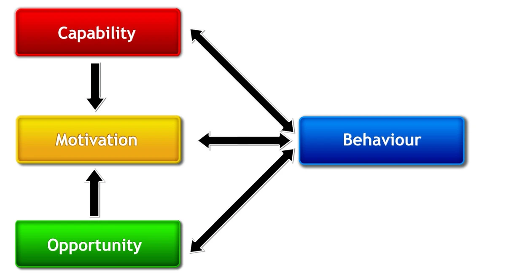
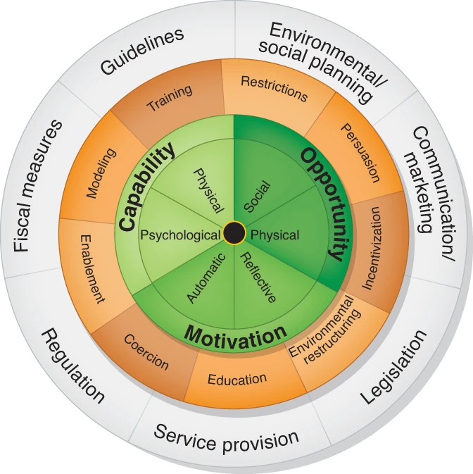

Selecting the Behaviour Change Wheel framework
In chapters 3 I explored possible barriers authors may encounter when using reporting guidelines. Some barriers were inherent to the guidelines to themselves, whereas others originated from other parts of the system through which reporting guidelines are disseminated. In this chapter, I explain how I chose a framework to help me understand and improve this complex system.
I considered the MRC guidance for developing and evaluating complex interventions[1] and the Person Based Approach (PBA)[2]. Both emphasise the importance of understanding context, evidencing needs, and iterative evaluation and refinement. Both recommend involving stakeholders and the intervention recipients. I have adhered to these principles in my thesis. In chapters 3 - 5 I collected evidence for needs and context. In chapters 7, 8, and 11 I explain how I involved stakeholders and users, and in chapters 11 and 12 I explain how I refined the intervention in response to author feedback and possible next steps for iterative development.
However, at this stage in my PhD my aim was to find solutions to the barriers I had identified. Neither MRC guidelines nor PBA advise you how to do this directly. Instead, they encourage intervention designers to theorise how the intervention is working. To do this, designers need to select a theoretical framework. First I considered the Theoretical Domains Framework (TDF, [3]; [4]). The TDF was developed to help implementation researchers identify what influences the behaviour of health professionals and patients. It was made by synthesising 33 theories of behaviour and behaviour change into 14 domains that cover the cognitive, affective, social, and environmental influences on behaviour. The TDF and its accompanying guide [5] are useful, but they require considerable understanding of psychological constructs that might not be familiar to non-behavioural experts, and although the TDF helps understand what influences behaviour, there is little guidance on how to then go about changing behaviour.
The Behaviour Change Wheel (BCW, [6]) addresses these limitations. It is designed for “policy makers, intervention designers, researchers and practitioners…from a wide range of disciplines with varying levels of expertise”. It was made by synthesizing 19 existing frameworks. In doing so, Michie et al. ensured the BCW is comprehensive (it covers all intervention options), conceptually coherent (category members are of same type), and linked to an overarching model of behaviour. This was one of their core objectives, as prevailing frameworks at the time lacked these qualities. For example, they criticise MINDSPACE [7] (popular amongst UK policy makers at the time) for not including all intervention types and for conflating psychological constructs with mechanisms of action and modes or delivery.
The BCW’s core is the COM-B model of behaviour, which stands for Capability, Opportunity, Motivation and Behaviour and is simpler and more intuitive than the TDF. When making COM-B, Michie et al began with motivation, defined as: “brain processes that energize and direct behaviour” [8]. Their next step was “to consider the minimum number of additional factors needed to account for whether change in the behavioural target would occur, given sufficient motivation” [6]. They used a US consensus meeting of behavioural theorists [9] and a centuries-old principle of criminal law: that to prove guilt one must show means or capability, opportunity, and motive. Michie et al. argued that the “common conclusion from these two separate strands of thought lends confidence to this model of behaviour”[6], and they added further confidence by mapping COM-B to the TDF. When describing COM-B, Michie et al. explain how the components capability, opportunity, and motivation interact with each other to generate behaviour which, in turn, may influence these components. (See Figure 1)
The COM-B model holds that behaviour arises from a system that involves three components: Capability, Opportunity, and Motivation. These are defined in Table 1 but, briefly; capability includes having the required knowledge; opportunity includes the necessary resources such as time, materials, or reminders; and motivation means having the required intentions, beliefs, wants and needs to perform the behaviour.


Changing behaviour requires altering one or more of these components and the BCW goes beyond the TDF by helping intervention designers select options to achieve this. The wheel’s middle ring contains intervention functions, defined as “broad categories of means by which an intervention can change behaviour” [10]. An intervention may have multiple functions. For example, a television advert about drink driving may educate its audience with information about alcohol limits and persuade using emotive imagery. In this example, education is being used as an intervention function to target psychological capability (teaching people how much they can safely drink before driving) and persuasion is being used to target motivation (targeting people’s emotions to make them less likely to want to engage in drink driving). The functions you choose depend on the behavioural drivers you are trying to target. Intervention functions are described in Table 2.
Having decided what functions your intervention needs, the guide helps you decide how to implement them with policy categories, defined as “types of decisions made by authorities that help to support and enact the interventions” [10]. Categories include communication/marketing, guidelines, regulation, and service provision, as described in Table 3.
Recognizing that intervention designers come from various disciplines and places of work, and that not all will have experience in applying behaviour change theory, Michie et al. published a book to help designers apply the BCW [10]. This book contains suggested steps, exercises, and worksheets. In the next chapter, I describe how I guided members of the UK EQUATOR Centre through this process.
Reflections on this chapter
At this point in my thesis I had my transfer of status. It was a pivotal moment where I began to view reporting guidelines differently, Charlotte Albury joined my supervision team, and the direction of my thesis took a qualitative turn.
In my introductory chapter I presented why I view reporting guidelines to be part of a complex behaviour change intervention, but I have not always viewed them this way. When I first discovered reporting guidelines in 2014, I would have described them simply as recommendations for authors to adhere to when writing-up research. I would have talked about checklists, full guidance, and journal policies. But I would not have zoomed into the details of those parts: I would not have scrutinized the contents of resources, nor the intricacies of editorial policy. I also would not have zoomed out to view the broader picture of how guidelines are created and disseminated, or the connections between these parts.
But after reading accounts of authors struggling with the guidance content, access, formats, workflows, confidence, and the behaviour of others, I began to see things differently. Instead of revering guidelines as perfect publications set in stone, I began to see them as resources whose content, structure,and layout could be optimized. I began to see details; how a single word could lead to confusion, the nuances between standards and recommendations, between designing and reporting research. Beyond the guidelines themselves, I began to see the broader system that creates and disseminates them. I began to recognise the complexity arising from the number of different stakeholders involved, differences between guidelines, the skills and prior knowledge an author must have to act on the guidance, and variation in how, when, and why guidelines are used.
This simultaneous zoom-in and zoom-out felt confusing, and I struggled to communicate my thoughts to my initial supervision team - Gary, Jen and Michael - who worked for EQUATOR but had little experience in behaviour change interventions or qualitative methods.
Discovering the MRC guidance for complex interventions was my first turning point. Its description of complexity resonated and helped me understand how an intervention could be a system, not just a single thing. From there, I discovered the world of behaviour change and took a few tentative steps. My transfer assessors foresaw my thesis becoming increasingly qualitative and felt I would benefit from a qualitative supervisor. My assessors recommended Charlotte Albury. Charlotte’s expertise opened new avenues of exploration using methods less familiar to EQUATOR and I, and under her guidance my tentative steps into qualitative behaviour change territory became more certain.
| COM-B model component: Definition |
Example |
|---|---|
| Physical capability: Physical skill, strength, or stamina |
Having the skill to take a blood sample |
| Psychological capability: Knowledge or psychological skills, strength, or stamina to engage in the necessary mental processes |
Understanding the impact of carbon dioxide on the environment |
| Physical opportunity: Opportunity offered by the environment involving time, resources, locations, cues, physical ‘affordance’ |
Being able to go running because one owns appropriate shoes |
| Social opportunity: Opportunity afforded by interpersonal influences, social cues and cultural norms that influence the way that we think about things, e.g., the words and concepts that make up our language |
Being able to smoke in the house of someone who smokes but not in the middle of a board meeting |
| Reflective motivation: Reflective processes involving plans (self-conscious intentions) and evaluations (beliefs about what is good and bad) |
Intending to stop smoking |
| Automatic motivation: Automatic process involving emotional reactions, desires (wants and needs), impulses, inhibitions, drive states and reflex responses |
Feeling anticipated pleasure at the prospect of eating a piece of chocolate cake |
| Intervention Function | Definition | Example of intervention function |
|---|---|---|
| Education | Increasing knowledge or understanding | Providing information to promote healthy eating |
| Persuasion | Using information to induce positive or negative feelings or stimulate action | Using imagery to motivate increases in physical activity |
| Incentivisation | Creating an expectation of reward | Using prize draws to induce attempts to stop smoking |
| Coercion | Creating an expectation of punishment or cost | Raising the financial cost to reduce excessive alcohol consumption |
| Training | Imparting skills | Advanced driver training to increase safe driving |
| Restriction | Using rules to reduce the opportunity to engage in the target behaviour (or to increase the target behaviour by reducing the opportunity to engage in competing behaviours) | Prohibiting sales of solvents to people under 18 to reduce use for intoxication |
| Environmental restructuring | Changing the physical or social context | Providing on-screen prompts for GPs to ask about smoking behaviour |
| Modelling | Providing an example for people to aspire to or imitate | Using TV drama scenes involving safe-sex practices to increase condom use |
| Enablement | Increasing means/reducing barriers to increase capability (beyond education and training) or opportunity (beyond environmental restructuring) | Behavioural support for smoking cessation, medication for cognitive deficits, surgery to reduce obesity, prosthesis to promote physical activity |
| Policy Category | Definition | Example |
|---|---|---|
| Communication/marketing | Using print, electronic, telephonic or broadcast media | Conducting mass media campaigns |
| Guidelines | Creating documents that recommend or mandate practice. This includes changes to service provision | Producing and disseminating treatment protocols. |
| Fiscal measures | Using the tax system to reduce or increase the financial cost | Increasing duty or increasing anti-smuggling activities |
| Legislation | Making or changing laws | Prohibiting sale or use |
| Environmental/social planning | Designing and/or controlling the physical or social environment | Establishing support services in workplaces, communities etc. |